1056B multi-point injection system (mpi)
- Path
- Descriptions > 10 ENGINE UNIT > 1056 PETROL INJECTION SYSTEM > 1056B multi-point injection system (mpi)
- Kind
- system description
- Applies to
- engines: 3.2 V6; all production periods
- Interactive page
- https://sloeber94.github.io/elrnDB-aGt/en/#/2921346
Applies to: engines: 3.2 V6; all production periods
CONSTRUCTION FEATURES
General view
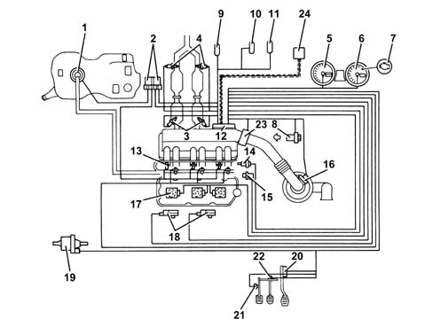
1 - Electric fuel pump 2 - Relays 3 - Lambda sensors upstream of catalytic preconverters 4 - Lambda sensors downstream of catalytic preconverters 5 - Speedometer 6 - Rev counter 7 - Engine Check warning light 8 - Timing sensor 9 - Climate control connector 10 - Diagnostic connector 11 - Alfa Romeo CODE connector 12 - Injection/ignition control unit 13 - Injectors 14 - Coolant temperature sensor 15 - Rpm sensor 16 - Air flow meter with air temperature sensor 17 - Ignition coils 18 - Knock sensors 19 - Fuel vapour recirculation solenoid valve 20 - Accelerator pedal with built-in potentiometer. 21 - Clutch pedal switch 22 - Brake pedal switch 23 - Throttle body integral with D.V.L. 24 - CAN line
ME7.3.1 injection/ignition control unit
The control unit is fitted in the engine compartment, on the intake chamber.
The control unit memory is the 'flash EPROM' type, i.e. reprogrammable from the outside without intervening on the hardware.
The adoption of the Alfa Romeo CODE does not allow control units to be exchanged between vehicles.
The control unit implements the self-learning mode in the following conditions:
- installation of new injection control unit,
- installation of a new throttle body actuator integratd with D.V.L.
- removing/refitting or replacement of rpm sensor/phonic wheel, for recognizing misfire.
PIN-OUT
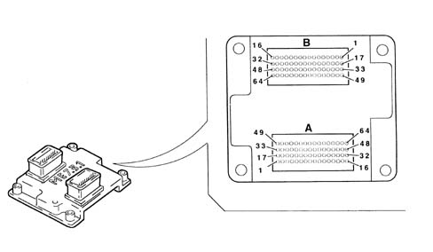
F1 - Not connected F2 - Fuel vapour recovery solenoid control F3 - Alfa Romeo CODE connection F4 - Not connected F5 - Not connected F6 - Compressor engagement request F7 - Supply for accelerator pedal potentiometer F8 - Signal for potentiometer - 1 accelerator pedal F9 - Quadrinary - Fan 1st speed request F10 - Cruise Control ON/OFF F11 - Not connected F12 - CAN-L line F13 - Compressor relay control F14 - Not connected F15 - Direct power supply F16 - Ignition-operated power supply, via main relay F17 - Not connected F18 - Cruise Control warning light F19 - Engine coolant overheating warning light F20 - Preparation for Flash Programming F21 - Not connected F22 - Fuel level sensor F23 - Not connected F24 - Earth for potentiometer - 1 accelerator pedal F25 - Earth for potentiometer - 2 accelerator pedal F26 - Brake lights switch F27 - Brake lights F28 - Not connected F29 - CAN -H line F30 - Fuel pump relay control F31 - Main relay activation F32 - Ignition-operated power supply, via main relay F33 - Not connected F34 - Engine coolant warning light F35 - Rev counter signal F36 - Not connected F37 - Not connected F38 - Not connected F39 - Not connected F40 - Signal for potentiometer - 2 accelerator pedal F41 - Quadrinary - fan 2nd speed request F42 - Cruise Control Resume F43 - Cruise Control SET + F44 - Not connected F45 - Not connected F46 - Injection warning light A47 - +15 ignition-operated power supply A48 - Supply controlled by ignition, via main relay F49 - Not connected F50 - Fan 1st speed control F51 - Not connected A52 - Fuel consumption signal F53 - Diagnostic connection (K line) F54 - Air temperature sensor signal F55 - Not connected F56 - Supply for accelerator pedal potentiometer F57- Air flow meter signal F58 - Cruise Control SET - F59 - Switch on clutch pedal F60 - Not connected F61 - Not connected F62 - Fan 2nd speed control F63 - Air flow meter supply F64 - Not connected M1 - - Throttle body motor earth M1 - Lambda sensor heater (pre-cat. 2) M3 - Operation of injector for cyl. relay M4 - Not connected M5 - Not connected M6 - Knock sensor reference earth 2 M7 - Lambda sensor reference earth 2) M8 - Not connected M9 - Not connected M10 - Engine RPM sensor M11 - Not connected M12 - Lambda sensor reference earth (post-cat 2) M13 - Not connected M14 - Cylinder 3 coil operation M15 - Cylinder 2 coil operation M16 - Cylinder 1 coil operation M17 - Throttle body motor supply M18 - Lambda sensor heater (post-cat. 2) M19 - Operation of injector for cyl. relay M20 - Operation of injector for cyl. 3 M21 - Not connected M22 - Knock sensor 1 M23 - Lambda sensor signal (pre-cat. 1) M24 - Potentiometer - 1 throttle body M25 - Engine coolant temperature M26 - Sensors reference earth M27 - Not connected M28 - Lambda sensor signal (post-cat. 1) M29 - Not connected M30 - Cylinder 6 coil operation M31 - Cylinder 5 coil operation M32 - Cylinder 4 coil operation M33 - Throttle body motor earth M34 - Lambda sensor heater (pre-cat 1) M35 - Operation of injector for cyl. 4 M36 - Operation of injector for cyl. 6 M37 - Not connected M38 - Knock sensor 2 M39 - Lambda sensor signal (pre-cat. 2) M40 - Throttle body potentiometer 2 M41 - Not connected M42 - Timing sensor signal M43 - Not connected M44 - Lambda sensor signal (post-cat. 2) M45 - Not connected M46 - Not connected M47 - Not connected M48 - Not connected M49 - Throttle body motor supply M50 - Lambda sensor heater (post-cat. 1) M51 - Not connected M52 - Operation of injector for cyl. 5 M53 - Not connected M54 - Knock sensor 1 reference earth M55 - Lambda sensor reference earth 1) M56 - Not connected M57 - Not connected M58 - Throttle body potentiometer supply M59 - Engine rpm sensor M60 - Lambda sensor reference earth (post-cat. 1) M61 - Not connected M62 - Not connected M63 - Not connected M64 - Not connected
INJECTORS
The single-jet fuel injectors are installed on the distribution manifold and are pressed by the manifold itself into their respective seats in the inlet ducts.
A retainer secures the fuel injector to the distribution manifold, and two O-rings ensure the seal.
The fuel injectors are responsible for delivering the necessary quantity of fuel to the engine.
They are 'all or nothing' devices, as they can remain in only two stable states, i.e. open or closed. They allow fuel to pass when they are open, while they block delivery when they are closed.
Operation
They basically consist of a nozzle controlled by a solenoid and a return spring (4).
In the rest position, the pintle (2), which is joined to the core (3), is pushed by the spring onto the injector nose (6), thus closing the hole, ensuring a seal and preventing the undesired emergence of fuel.
As soon as the winding (5) is energized, the core is attracted, and it compresses the spring thus opening the hole of the nozzle and allowing fuel to emerge.
Considering the physical characteristics of the fuel (viscosity, density) and the pressure drop (via the pressure regulator) to be constant, the quantity of fuel injected depends only on the fuel injector opening time.
The winding energization time is normally indicated as 'fuel injection time'.
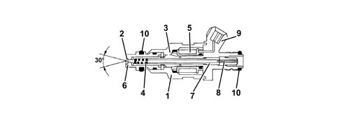
1 - Injector case 2 - Pintle 3 - Magnetic core 4 - Coil spring 5 - Winding 6 - Injector nose 7 - Adjustable spring loader 8 - Filter 9 - Electrical connection 10 - Sealing ring
ENIGINE COOLANT TEMPERATURE SENSOR
It is fitted on the thermostatic cup and measures the temperature of the coolant by means of an NTC thermistor which has a negative resistance coefficient.
The sensor is produced using semiconductor technology, so if the temperature of the sensor increases as the temperature of the coolant increases, the resistance decreases.
As the variation in resistance is not linear, for the same temperature increment, it is higher for low temperatures than for high temperatures.
DETONATION SENSORS
The piezoelectric type detonation sensors are fitted on the cylinder block/crankcase, between the two heads, and measure the intensity of the vibrations caused by the detonation in the combustion chambers.
The piezoelectric crystal forming the sensor detects the vibrations generated at a frequency of between 12 and 16 kHz, and transforms them into electrical signals sent to the fuel injection control unit.
RPM SENSOR
It is fitted on the engine block, where it faces the phonic wheel located on the flywheel.
It is of the inductive type, i.e. it functions by means of the variation in the magnetic field generated by the passage of the teeth of the flywheel (60-2 teeth).
The engine management control unit uses the rpm sensor to:
- – determine the rotation speed;
- determine the angle of the crankshaft.
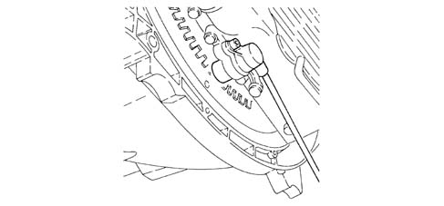
Operation
The passage from full to empty, due to the presence or absence of the tooth, causes a variation in the magnetic flow which is sufficient to generate an induced alternating voltage, resulting from the count of teeth located on a ring (or phonic wheel).
The frequency and amplitude of the voltage sent to the electronic control unit give the latter the measurement of the speed of the front wheels.
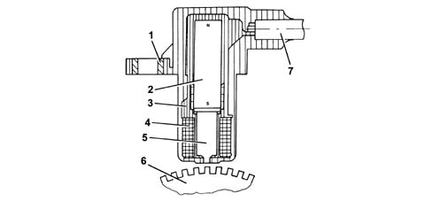
1 - Brass bush 2 - Permanent magnet 3 - Plastic sensor casing 4 - Coil winding 5 - Polar core 6 - Phonic wheel 7 - Two-wire coaxial cable
The distance (gap) for obtaining correct signals, between the end of the sensor and the flywheel, should be between 0.8 and 1.5 mm.
This gap is not adjustable, so if a value outside the tolerance range is measured, check the condition of the sensor and the flywheel.
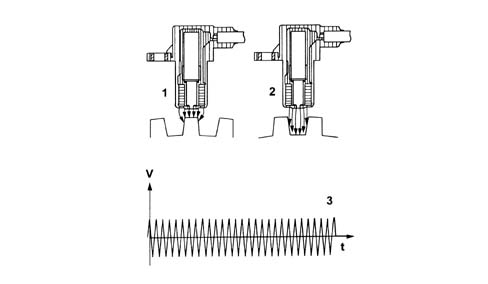
1 - Maximum magnetic flow 2 - Minimum magnetic flow 3 - Induced alternating voltage trend
TIMING SENSOR
Hall effect; it is mounted on the cylinder head and faces a disc on the rear part of the right cylinder head exhaust end camshaft.
The disc contains a peg which allows the sensor to signal the engine timing position.
The engine control unit uses the timing sensor signal for recognizing T.D.C. at the end of compression for a quick start.
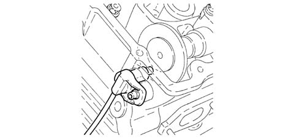
Operation
A semiconducting layer, through which current passes, immersed in a perpendicular magnetic field (force lines perpendicular to the current direction), generates at its ends a difference in potential known as Hall voltage.
Whilst the disc (1) rotates, when the tooth (3) passes over the sensor (2), it blocks the magnetic field with a consequent 'low' output signal.
Conversely, after the tooth (3) passes the sensor (2), the signal becomes 'high'.
Consequently the high signal alternates with the low signal every two engine revolutions, to be precise when cylinder no. 1 is 58° before TDC.
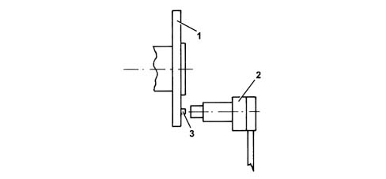
1 - Camshaft disc 2 -Timing sensor 3 - Tooth
ACCELERATOR PEDAL WITH BUILT-IN POTENTIOMETER
The sensor consists of a casing, secured to the accelerator pedal mount, which contains a shaft, in an axial position, connected to two potentiometers: one main one and one safety one.
The engine control unit implements the following recovery strategies:
- if there is a fault with one of the two potentiometers, a throttle opening of up to 25% is allowed for a long period
- if both of the potentiometers fail completely, or one potentiometer and the brake pedal switch fail, the throttle opening is excluded.
There is a coil spring on the shaft which guarantees the correct resistance to the pressure whilst a second spring ensures the return on release.
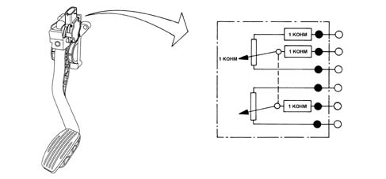
Operation
The position of the accelerator pedal is transformed into an electrical voltage signal and is sent to the fuel injection control unit by the potentiometer connected to the accelerator pedal.
The accelerator pedal position signal is processed together with the information relating to the rpm, to obtain the fuel injection times and relevant pressure.
THROTTLE BODY WITH DVL
It is fitted on the inlet chamber and regulates the quantity of air drawn in by the engine.
According to the signal coming from the accelerator pedal potentiometer, the injection control unit controls the opening of the throttle by means of a direct current motor integrated in the throttle body integrated with D.V.L.
The throttle opening takes place between 0° and 80° therefore including the idle adjustment.
The throttle body integral with D.V.L. is equipped with two potentiometers integrated so that one controls the other and viceversa.
If both the potentiometers fail or there is no supply, depending on the position of the accelerator pedal, the control unit reduces the drive torque:
- fully depressed, it cuts off the supply to one or more pistons, until a maximum speed of 2500 rpm is reached.
- in intermediate positions, it cuts off the supply to one or more pistons, until a speed below 2500 rpm is reached.
If the throttle body integrated with D.V.L. or the injection control unit or the air chamber is replaced then the self-learning procedure must be carried out.
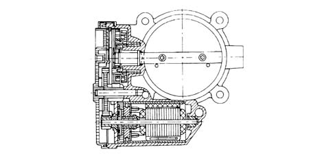
Air flow meter
The flow meter is located on the air inlet duct and is of the 'hot film' type.
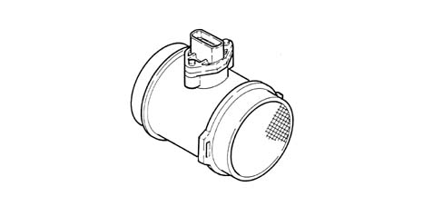
The intake air temperature sensor is built into the flow meter.
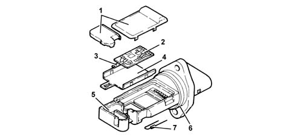
1 - Covers 2 - Electronic card 3 - Sensor 4 - Support plate 5 - Support 6 - O-ring 7 - Temperature sensor
Operation
The operating principle is based on a heated diaphragm located in a measuring duct through which the intake air entering the engine flows.
The hot film diaphragm is kept at a constant temperature (about 120°C above the incoming air temperature) by the heating resistor.
The air mass passing through the measuring duct tends to draw heat from the diaphragm, so to keep the latter at a constant temperature, some current must flow through the resistor.
This current is measured by a suitable Wheatstone bridge.
The current is therefore proportional to the mass of flowing air.
The flow meter directly measures the air mass (not volume), thus eliminating problems of temperature, altitude, pressure, etc.